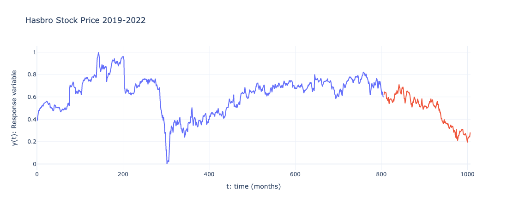
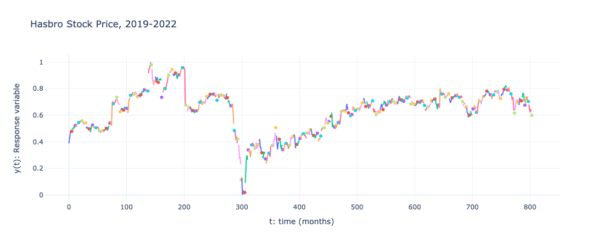
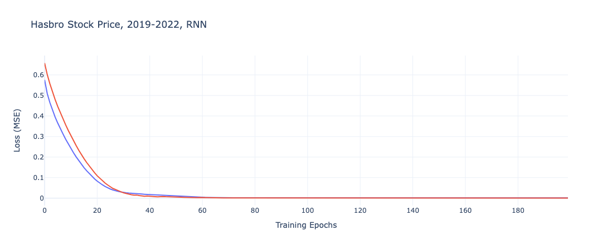
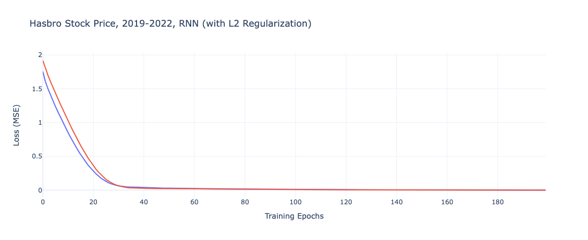
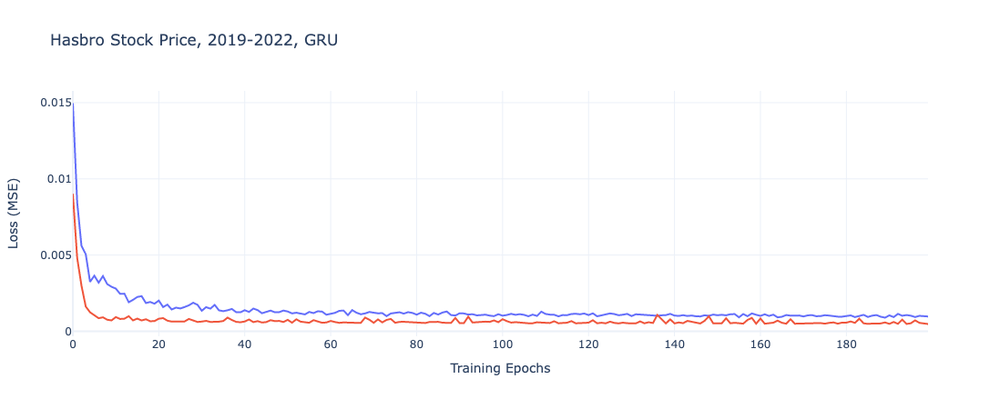
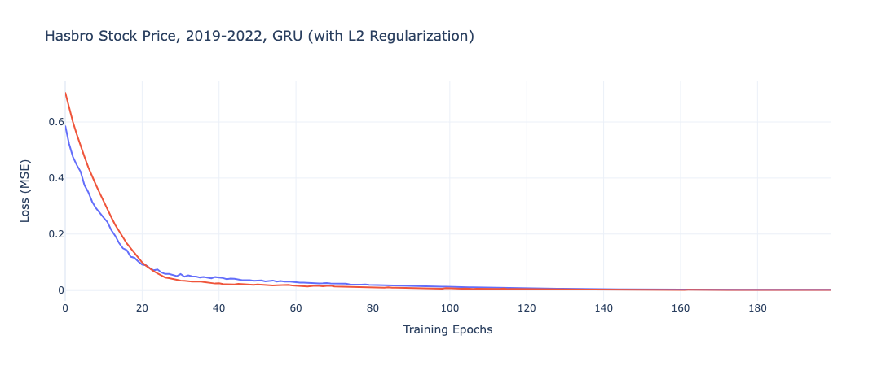
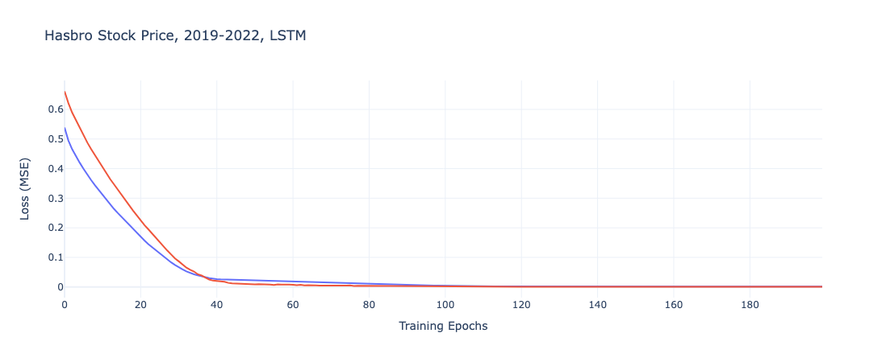
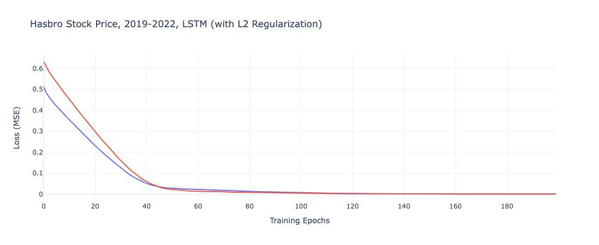
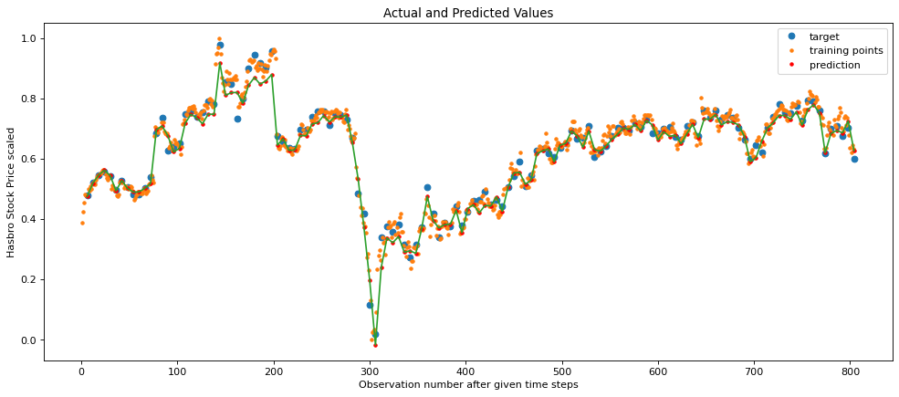

Deep Learning
Since our multivariate analysis using Magic: the Gathering cards to model Hasbro’s stock price is constrained by a lack of daily data, we return to consider how well we can predict the stock price. In this iteration, however, we investigate the effectiveness of three neural network implementations to see if more sophisticated modeling techniques can improve results from our original ARMA model.
As with most machine learning techniques, there is a trade-off between interpretability and predictive power. In this case, we consider whether the more complicated neural nets outperform our simpler models enough to warrant their use. Given the goal of predicting a stock price, there is less prioritization given to being able to explain the model and a higher focus on its output.
Before diving into the modeling techniques, we review the Hasbro stock price over the last several years. Even in viewing a scaled version of the data, we can clearly observe the market collapse in early 2020 due to the COVID-19 pandemic as well as the tumultuous performance of the stock across 2022, as previously explored. We also denote the training data (blue) and test data (red) we use in building and evaluating the neural networks.

Neural Networks
We consider three neutral networks designs. In each case, the models are built with and without L2 regularization to evaluate the regularization’s impact on overfitting and the error term. In each case, we set our partition to predict five days out to represent a week’s worth of trading days.

Recurrent Neural Network
The first is a Recurrent Neural Network (RNN), a vanilla neural net implementation with three hidden layers, one dense layer, and a hyperbolic tangent activation function.


From plotting the loss function over the course of each epoch, the only clear difference between the two models is the starting point for the loss function, where the regularized iteration is twice as high as the regular RNN model. They both converge relatively quickly, however, so the impact of this difference is minimal.
| Model | Train RSME | Test RSME |
|---|---|---|
| RNN | 0.03303 | 0.03158 |
| RNN w/ L2 | 0.02831 | 0.02568 |
In fact, the regularized implementation of the Recurrent Neural Network performs better on both the training and testing data.
Gated Recurrent Unit
We then construct a Gated Recurrent Unit (GRU) neural network. To further combat overfitting on the training data that includes anomalies like the stock price’s all-time high as well as the COVID-19 pandemic, this model includes a recurrent dropout mask which helps sever correlation between training data and the layer of the neural network that its exposed to. GRUs are noted as working well with small data. With only 1,000 observations across the train and test data, this could prove to be effective for the task at hand.


Similarly, with the GRU model, we denote that the regularized model starts with a higher term, but eventually and more gradually converged to a similar results.
| Model | Train RSME | Test RSME |
|---|---|---|
| GRU | 0.02908 | 0.02713 |
| GRU w/ L2 | 0.02871 | 0.02954 |
Unlike with the Recurrent Neutral Network, we do not see as dramatic a difference between the default model and the regularized iteration. Instead, the models have very similar error terms, with the default GRU slightly out performing on both the train and test data. These results are largely in line with the regularized RNN model.
Long Short Term Memory
Finally, we build a Long Short Term Memory (LSTM) neural network. While LSTM models are most often used with text data, they can work broadly with any sequential data series and so it applies well to our daily stock price task.


In contrast to the previous iterations, we note for both models higher initial error terms and the more gradual convergences over the course of the training epochs.
| Model | Train RSME | Test RSME |
|---|---|---|
| LTSM | 0.03884 | 0.02855 |
| LTSM w/ L2 | 0.03851 | 0.03263 |
The performance terms bear out the expected results from the plots. With higher train and test RSME values than the RNN or GRU alternatives, its possible these models underfit the data and thus are not the most representative option.
Selecting a Neutral Network Model
Having explored three difference architectures and their regularized counterparts, we select the regularized Recurrent Neural Network as it features the optimized RMSE and does not appear to neither overfit nor underfit the training data as much as other options.
We can then plot the actual and predicted values to discover where the model performs well and where it struggles to model Hasbro’s stock price.

In this plot, the green line depicts the predicted values for each daily Hasbro stock price. Surprisingly, the model follows and captures the COVID-19 pandemic effect rather well. The one area where it falls off in performance is the all-time highs reached in late 2019, where the model underestimates the stock price for a few weeks in a row. Outside of this one area, the model performs well, despite the extensive degree of noise in the dataset.
Conclusion
Does the added complexity of the neutral network sufficiently improve its predictive capabilities over the ARMA model? The selected ARMA model, which narrowly beat out a more naive benchmark, had a RSME of 1.8. As such, any of these neural networks offer impressive improvements in predicting Hasbro’s stock price, particularly when considered that it is predicting further into the future than the ARMA model as well. Comparing this model to the ARIMA model is not quite an equivalent comparison because the ARIMA is limited to a weekly time series and only a year’s worth of data, but it also featured a similar RMSE of 0.027.
Because inference and interpretation are less crucial than precise forecasting in this instance, the neural network is the clearly superior model compared to the ARMA iteration. However, the ARIMAX model performing similarly while also working with less granular data suggests that, were the data constraints of using Magic: the Gathering products as a model feature overcome, it could prove to be a more powerful model than deploying a neutral network with only past stock prices as means to predict future values.